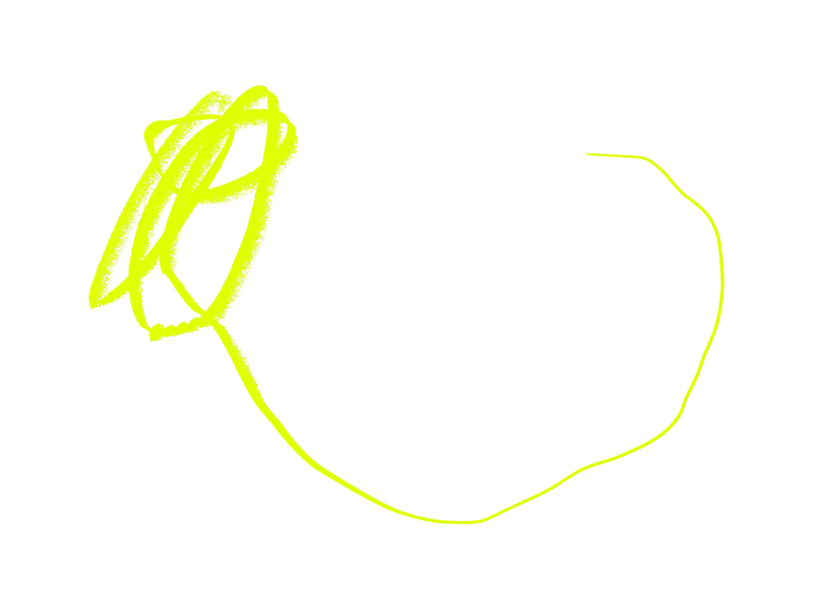

There was once a time when strangers talked to one another, sometimes eagerly. “In past eras, daily life made it necessary for individuals to engage with others different from themselves,” Paula Marantz Cohen explains. In those moments of unpredictability and serendipity, we confronted difference. There were no smartphones, message boards, or online factions. Maybe because life moved at a slower pace, and every interaction wasn’t so freighted with political meaning, we had the opportunity to recognize our full humanity. Nowadays, she argues, we are sectarian and “self-soothing,” having fallen out of such practice. What we need is to return to the basics: to brush up on the art of conversation.
All
the Words Being Said